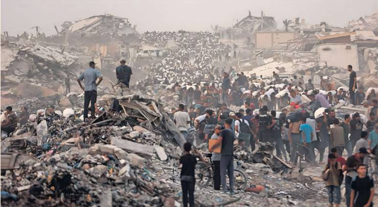
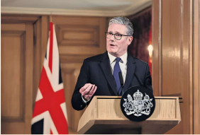

In the end, Sir Keir Starmer acted. After an emergency cabinet meeting lasting about 90 minutes on Tuesday, the UK prime minister put Britain on a path to recognising Palestine as a state, probably as soon as September.
For the ruling Labour party’s MPs and cabinet ministers who have lobbied Starmer to take this decisive diplomatic step for months, there was huge relief, coupled with frustration it had taken so long. “He was pushed,” said one senior Labour MP. That is strongly denied by Starmer’s allies, who insisted the prime minister was just waiting for the moment when recognition of a Palestinian state would have the most impact. “It was always when, not if,” said one.
Starmer has frustrated many in the Labour party, not just left-wingers, over his handling of the Gaza crisis and what some MPs have seen as a lack of urgency in his response to the grim scenes there.
When French President Emmanuel Macron announced last week he would recognise Palestinian statehood at the UN General Assembly in September, that frustration with Starmer turned to anger. “Number 10 had loads of incoming fire over the weekend,” said a minister. More than 130 Labour MPs signed a letter calling on Starmer to move now to Palestinian state recognition.
Starmer’s aides insisted that the end result of Tuesday's cabinet meeting was “100 per cent unity” behind a position that is most likely to see Britain recognise a Palestinian state around the time of the General Assembly. “One way or another you get to Palestinian recognition,” said one Starmer ally, after the prime minister set out a “UK plan” for a stable peace between Israelis and Palestinians, which he hopes will win wide international support.
Under Starmer’s plan, Britain will recognise a Palestinian state in September unless Israel takes “substantive steps to end the appalling situation in Gaza,” agrees to a ceasefire and commits to a long-term, sustainable peace based on a two-state solution. Dame Emily Thornberry, Labour chair of a parliamentary foreign affairs committee, said bluntly: “That’s not going to happen.” She said the only way it could happen would be if Israel changed its government before September.
But even in the extremely unlikely event that Benjamin Netanyahu, Israel’s prime minister, agreed with Starmer’s “conditions,” that would still create a pathway for Britain recognising Palestine as part of a two-state solution.
Starmer has been advised throughout by Jonathan Powell, his national security adviser, who has stressed the importance of holding back recognition until it might make some difference. He notes more than 140 nations have recognised a Palestinian state to little effect.
Powell, an architect of the Northern Ireland peace process, wanted Britain to act with other allies, but Macron’s surprise decision to announce the French position last week left Starmer looking like he was being buffeted by events.
Starmer has been suspected by some inside the Labour party of being too soft on Netanyahu ever since a radio interview in October 2023, when he was asked whether Israel’s right to self-defence extended to cutting off power and water to Gaza. “I think that Israel does have that right,” Starmer replied. He later claimed he was answering a previous question and was not backing the cutting off of crucial supplies to Gaza, but the perception stuck.
Ministers and Labour MPs have been frustrated with Starmer. After Macron announced his stance on statehood, one minister said: “The block is Keir himself as well as his senior advisers and their desire to stay close to the US.”
Downing Street officials admitted the US might react negatively to Starmer’s ultimatum to Netanyahu. Marco Rubio, US secretary of state, said last week that Macron’s move was “a reckless decision that only serves Hamas propaganda.”
US President Donald Trump was less hostile to the idea during his meetings with Starmer in Scotland this week, suggesting he would not be too upset if the UK went down the same route as France. Trump’s comments on scenes of “real starvation” in Gaza also changed the mood. But the US president is wary of the UK plan, while Germany’s Chancellor Friedrich Merz is unlikely to back a Palestinian state any time soon.
Nor is there any sign Netanyahu will change his approach to Gaza and endorse a peace process based on a two-state solution for fear of Britain and France formally recognising a Palestinian state in September.
But Starmer’s plan was backed by the British public in a poll by YouGov released on Tuesday, which showed 45 per cent of people supported recognition of a Palestinian state, with only 14 per cent opposed. Starmer, who is also trying to galvanise an international aid effort, has belatedly aligned himself with his party and the public on Palestinian statehood. Many Labour figures wish it had just happened sooner.